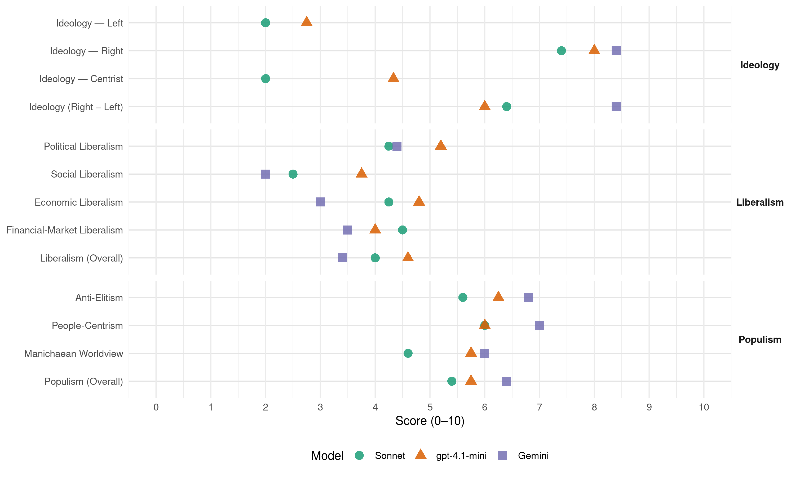

(France, 2022)
manifesto_id 31720_202206
Get full text: This site shows derived annotations and short verbatim quotes only. The full manifesto text is © Manifesto Project / WZB — obtain it via manifesto-project.wzb.eu using the manifesto_id above.
Headline scores
| Dimension | Sonnet | gpt-4.1-mini | Gemini |
|---|---|---|---|
| Populism (Overall) | 5.4 | 5.8 | 6.4 |
| Anti-Elitism | 5.6 | 6.2 | 6.8 |
| People-Centrism | 6.0 | 6.0 | 7.0 |
| Manichaean Worldview | 4.6 | 5.8 | 6.0 |
| Ideology (Right − Left) | 6.4 | 6.0 | 8.4 |
| Liberalism (Overall) | 4.0 | 4.6 | 3.4 |
| Political Liberalism | 4.2 | 5.2 | 4.4 |
| Social Liberalism | 2.5 | 3.8 | 2.0 |
| Economic Liberalism | 4.2 | 4.8 | 3.0 |
| Financial-Market Liberalism | 4.5 | 4.0 | 3.5 |
Evidence per dimension
Economic Liberalism
Gemini · score 2.0 · verified · chunk 1
“j’exclurai l’agriculture du champ des traités de libreéchange”
libre-échange déséquilibré qui permet d’importer des produits qui ne répondent pas aux normes de qualité française. Dès lors, j’exclurai l’agriculture du champ des traités de libreéchange.
Gemini · score 2.0 · verified · chunk 2
“j’exclurai l’agriculture du champ des traités de libreéchange”
libre-échange qui permet d’importer des produits qui ne répondent pas aux normes de qualité française. Dès lors, j’exclurai l’agriculture du champ des traités de libreéchange.
Gemini · score 4.0 · verified · chunk 3
“exonérer d’impôt sur les sociétés, pour cinq ans”
Mesure n°4 : exonérer d’impôt sur les sociétés, pour cinq ans, toute entreprise créée par un moins de trente ans
Gemini · score 4.0 · verified · chunk 4
“Mettre un terme à toutes leurs pratiques anticoncurrentielles”
Je rétablirai la souveraineté de notre pays, entamée par des grandes entreprises étrangères qui se pensent au-dessus de nos lois en les contraignant à : … Mettre un terme à toutes leurs pratiques anticoncurrentielles
Gemini · score 4.0 · mixed · chunk 5
“l’égalité de la concurrence est une autre condition”
lutter à armes égales avec les groupes multinationaux. Car l’égalité de la concurrence est une autre condition du libre choix
gpt-4.1-mini · score 3.0 · verified · chunk 1
“la priorité nationale sera autorisée, notamment dans l’accès à l’emploi”
La priorité nationale sera autorisée, notamment dans l’accès à l’emploi dans le secteur privé ou dans le secteur public et dans l’accès au logement social ; La présence des étrangers ne doit plus constituer une charge déraisonnable pour les finances publiques et le système de protection sociale.
gpt-4.1-mini · score 5.0 · verified · chunk 2
“plan de soutien de cinq ans propre à l’agriculture biologique”
Pour maintenir la production, assurer la succession des fermes en agriculture biologique… l’État mettra en place un plan de soutien de cinq ans propre à l’agriculture biologique.
gpt-4.1-mini · score 5.0 · verified · chunk 3
“concurrence déloyale au détriment des entreprises dûment déclarées”
Le développement du e-commerce international et son corolaire, les paiements par internet, facilitent les abus. Cela constitue en outre une concurrence déloyale au détriment des entreprises dûment déclarées sur le territoire national et un important manque à gagner pour le budget de l’État.
gpt-4.1-mini · score 5.0 · verified · chunk 4
“favoriser l’émergence d’acteurs français ou européens”
Il faut avant tout favoriser l’émergence d’acteurs français ou européens dans tous les domaines du numérique.
gpt-4.1-mini · score 6.0 · verified · chunk 5
“Le tourisme est créateur de richesses et d’emplois sur un territoire”
Le tourisme est créateur de richesses et d’emplois sur un territoire à condition que ce territoire dispose d’hébergements et de restaurants, quantitativement et qualitativement adaptés.
Sonnet · score 3.0 · verified · chunk 1
“le dogme du libre-échange nous impose l’importation”
Une concurrence exacerbée ensuite, car le dogme du libre-échange nous impose l’importation en Europe de produits agricoles à bas coûts et de piètre qualité
Sonnet · score 3.0 · verified · chunk 2
“j’exclurai l’agriculture du champ des traités de libre-échange”
Notre agriculture ne doit plus être sacrifiée au nom d’un libre-échange déséquilibré qui permet d’importer des produits qui ne répondent pas aux normes de qualité française. Dès lors, j’exclurai l’agriculture du champ des traités de libre-échange.
Sonnet · score 6.0 · verified · chunk 3
“exonération totale d’impôt sur le revenu avant trente ans”
je mettrai en place une règle simple, dès mon élection : l’exonération totale d’impôt sur le revenu avant trente ans
Sonnet · score 5.0 · verified · chunk 4
“incitations financières fortes”
Réduire le nombre de déserts médicaux grâce à des incitations financières fortes, celles existantes, inefficaces, étant supprimées
Sonnet · score 4.0 · mixed · chunk 5
“baisse de la fiscalité que Marine Le Pen souhaite”
bénéficieront de la baisse de la fiscalité que Marine Le Pen souhaite mettre en œuvre. En particulier, la suppression de certains « impôts de production »
Financial-Market Liberalism
Gemini · score 4.0 · verified · chunk 4
“cryptoactifs qui doivent être placés sous le régime commun des marchés financiers”
Payer en France des impôts correspondant à l’activité qu’ils y ont et aux profits qu’ils y font, notamment en ce qui concerne les cryptoactifs qui doivent être placés sous le régime commun des marchés financiers
Gemini · score 3.0 · verified · chunk 5
“financement par le fonds souverain que nous créerons”
n’ajoutera rien à l’endettement public, grâce au financement par le fonds souverain que nous créerons, et ne demandera rien à l’impôt.
gpt-4.1-mini · score 4.0 · verified · chunk 3
“fraude à la TVA”
La fraude dite du « carrousel de TVA » consiste à ne pas payer la TVA due pour des achats effectués entre deux pays de l’Union européenne. Ce type de fraude profite du fait que le paiement de la TVA repose sur les déclarations des opérateurs économiques et qu’elle est périodique, mensuelle ou trimestrielle, et non effectuée en temps réel.
Sonnet · score 5.0 · verified · chunk 2
“prêt public à taux zéro sur dix ans”
Un prêt public à taux zéro sur dix ans, pouvant aller jusqu’à 100 000 euros, viendra compléter tout prêt immobilier souscrit auprès d’une banque
Sonnet · score 5.0 · verified · chunk 3
“faire payer la TVA en temps réel par la banque”
peut être combattu en faisant payer la TVA en temps réel par la banque utilisée pour procéder à un achat ou à une vente
Sonnet · score 5.0 · verified · chunk 4
“cryptoactifs qui doivent être placés sous le régime commun des marchés financiers”
notamment en ce qui concerne les cryptoactifs qui doivent être placés sous le régime commun des marchés financiers
Sonnet · score 3.0 · verified · chunk 5
“restructuration du tissu économique, bancaire et financier”
La restructuration du tissu économique, bancaire et financier est essentielle dans le succès écologique. La refondation de systèmes coopératifs locaux et régionaux en est un facteur
Political Liberalism
Gemini · score 3.0 · verified · chunk 1
“faire prévaloir le droit national sur le droit international”
modifier la Constitution pour y intégrer des dispositions portant sur le statut des étrangers et la nationalité et pour faire prévaloir le droit national sur le droit international.
Gemini · score 5.0 · verified · chunk 2
“valeurs de la démocratie, de la République”
institution chargée de la transmission à nos enfants des valeurs de la démocratie, de la République et des connaissances.
Gemini · score 5.0 · verified · chunk 3
“par le biais du Referendum d’Initiative Citoyenne”
ne pourra se faire pendant trois ans que par le biais du Referendum d’Initiative Citoyenne que Marine Le Pen mettra en place.
Gemini · score 4.0 · verified · chunk 4
“seule l’application du droit national, par exemple en matière d’incitation à la haine”
ne plus imposer leur censure sur les contenus qu’ils diffusent en fonction de leurs propres règles ; seule l’application du droit national, par exemple en matière d’incitation à la haine, de protection des mineurs
Gemini · score 5.0 · verified · chunk 5
“ne laisserons pas l’écologie étouffer la démocratie”
nulle part le progrès écologique ne sera réussi… Nous ne laisserons pas l’écologie étouffer la démocratie.
gpt-4.1-mini · score 3.0 · verified · chunk 1
“la République fixe librement les conditions d’accès au territoire national”
Art. 1er. – Régime général des étrangers en France (création d’un nouvel art. 4-1 et compléments apportés aux articles 34 et 53 de la Constitution). I. – Le titre Ier de la Constitution est complété par un article 4-1 ainsi rédigé : « Art. 4-1. – La République fixe librement les conditions d’accès au territoire national des personnes qui ne possèdent pas la nationalité française.
gpt-4.1-mini · score 6.0 · verified · chunk 2
“transmission à nos enfants des valeurs de la démocratie, de la République”
L’Éducation nationale, plus qu’un service public, est une institution chargée de la transmission à nos enfants des valeurs de la démocratie, de la République et des connaissances.
gpt-4.1-mini · score 6.0 · verified · chunk 3
“Le Conseil constitutionnel a d’ailleurs indiqué, en 2010, que la lutte contre la fraude était une exigence constitutionnelle.”
La lutte contre tous les types de fraudes est une exigence républicaine La fraude fiscale, la fraude aux prestations sociales, les marchandises qui portent le label « CE » alors qu’elles ne respectent pas les normes de sécurité obligatoires en France ou les ententes illégales entre entreprises qui faussent la concurrence ne sont pas des fictions. Le Conseil constitutionnel a d’ailleurs indiqué, en 2010, que la lutte contre la fraude était une exigence constitutionnelle.
gpt-4.1-mini · score 4.0 · verified · chunk 4
“redonner aux forces de l’ordre et à la justice les moyens”
Il est temps de redonner aux forces de l’ordre et à la justice les moyens juridiques et matériels de protéger les Français.
gpt-4.1-mini · score 7.0 · verified · chunk 5
“Le chef de l’État présidera le Conseil de l’Outre-mer”
La présidente de la République portera une attention particulière à l’Outre-mer Le chef de l’État présidera le Conseil de l’Outre-mer, qui se réunira au moins deux fois par an pour garantir la parfaite mise en œuvre de la politique menée en faveur de nos compatriotes ultramarins et de leurs territoires.
Sonnet · score 4.0 · mixed · chunk 1
“Les dispositions proposées respectent pleinement l’État de droit”
Les dispositions proposées par le texte qui sera soumis au référendum respectent pleinement l’État de droit. Ce projet référendaire contient des mesures adaptées aux problèmes à résoudre, proportionnées et raisonnables.
Sonnet · score 4.0 · verified · chunk 2
“Referendum d’Initiative Citoyenne que Marine Le Pen mettra en place”
la seule façon d’ouvrir des débats sur ces sujets ne pourra se faire pendant trois ans que par le biais du Referendum d’Initiative Citoyenne que Marine Le Pen mettra en place.
Sonnet · score 5.0 · verified · chunk 3
“Referendum d’Initiative Citoyenne que Marine Le Pen mettra en place”
la seule façon d’ouvrir des débats sur ces sujets ne pourra se faire pendant trois ans que par le biais du Referendum d’Initiative Citoyenne que Marine Le Pen mettra en place
Sonnet · score 4.0 · verified · chunk 4
“préserver nos régimes démocratiques”
Il s’agit à la fois de mener un combat de civilisation pour préserver nos régimes démocratiques et les principes qui les fondent
Sonnet · score 4.0 · verified · chunk 5
“Nous ne laisserons pas l’écologie étouffer la démocratie”
Nos libertés ne seront pas sacrifiées au nom d’une écologie dévoyée. Nous ne laisserons pas l’écologie étouffer la démocratie. La transition sera désirée et choisie par les Français
Liberalism (Overall)
Gemini · score 2.0 · verified · chunk 1
“faire prévaloir le droit national sur le droit international”
modifier la Constitution pour y intégrer des dispositions portant sur le statut des étrangers et la nationalité et pour faire prévaloir le droit national sur le droit international.
Gemini · score 3.0 · verified · chunk 2
“j’exclurai l’agriculture du champ des traités de libreéchange”
libre-échange qui permet d’importer des produits qui ne répondent pas aux normes de qualité française. Dès lors, j’exclurai l’agriculture du champ des traités de libreéchange.
Gemini · score 4.0 · verified · chunk 3
“exonérer d’impôt sur les sociétés, pour cinq ans”
Mesure n°4 : exonérer d’impôt sur les sociétés, pour cinq ans, toute entreprise créée par un moins de trente ans
Gemini · score 4.0 · verified · chunk 4
“Mettre un terme à toutes leurs pratiques anticoncurrentielles”
Je rétablirai la souveraineté de notre pays, entamée par des grandes entreprises étrangères qui se pensent au-dessus de nos lois en les contraignant à : … Mettre un terme à toutes leurs pratiques anticoncurrentielles
Gemini · score 4.0 · verified · chunk 5
“l’égalité de la concurrence est une autre condition”
lutter à armes égales avec les groupes multinationaux. Car l’égalité de la concurrence est une autre condition du libre choix
gpt-4.1-mini · score 3.0 · verified · chunk 1
“la République fixe librement les conditions d’accès au territoire national”
Art. 1er. – Régime général des étrangers en France (création d’un nouvel art. 4-1 et compléments apportés aux articles 34 et 53 de la Constitution). I. – Le titre Ier de la Constitution est complété par un article 4-1 ainsi rédigé : « Art. 4-1. – La République fixe librement les conditions d’accès au territoire national des personnes qui ne possèdent pas la nationalité française.
gpt-4.1-mini · score 5.0 · verified · chunk 2
“L’Éducation nationale, plus qu’un service public, est une institution”
L’Éducation nationale, plus qu’un service public, est une institution chargée de la transmission à nos enfants des valeurs de la démocratie, de la République et des connaissances.
gpt-4.1-mini · score 5.0 · verified · chunk 3
“Le Conseil constitutionnel a d’ailleurs indiqué, en 2010, que la lutte contre la fraude était une exigence constitutionnelle.”
La lutte contre tous les types de fraudes est une exigence républicaine La fraude fiscale, la fraude aux prestations sociales, les marchandises qui portent le label « CE » alors qu’elles ne respectent pas les normes de sécurité obligatoires en France ou les ententes illégales entre entreprises qui faussent la concurrence ne sont pas des fictions. Le Conseil constitutionnel a d’ailleurs indiqué, en 2010, que la lutte contre la fraude était une exigence constitutionnelle.
gpt-4.1-mini · score 4.0 · verified · chunk 4
“redonner aux forces de l’ordre et à la justice les moyens”
Il est temps de redonner aux forces de l’ordre et à la justice les moyens juridiques et matériels de protéger les Français.
gpt-4.1-mini · score 6.0 · verified · chunk 5
“Le tourisme est créateur de richesses et d’emplois sur un territoire”
Le tourisme est créateur de richesses et d’emplois sur un territoire à condition que ce territoire dispose d’hébergements et de restaurants, quantitativement et qualitativement adaptés.
Sonnet · score 3.0 · verified · chunk 1
“faire prévaloir le droit national sur le droit international”
il est indispensable de modifier la Constitution pour y intégrer des dispositions portant sur le statut des étrangers et la nationalité et pour faire prévaloir le droit national sur le droit international.
Sonnet · score 4.0 · verified · chunk 2
“j’exclurai l’agriculture du champ des traités de libre-échange”
Notre agriculture ne doit plus être sacrifiée au nom d’un libre-échange déséquilibré. Dès lors, j’exclurai l’agriculture du champ des traités de libre-échange.
Sonnet · score 5.0 · verified · chunk 3
“exonération totale d’impôt sur le revenu avant trente ans”
je mettrai en place une règle simple, dès mon élection : l’exonération totale d’impôt sur le revenu avant trente ans
Sonnet · score 5.0 · mixed · chunk 4
“souveraineté de la France”
La souveraineté de la France et des pays européens est même remise en question de quatre manières
Sonnet · score 4.0 · mixed · chunk 5
“baisse de la fiscalité que Marine Le Pen souhaite”
bénéficieront de la baisse de la fiscalité que Marine Le Pen souhaite mettre en œuvre. En particulier, la suppression de certains « impôts de production »
Anti-Elitism
Gemini · score 8.0 · verified · chunk 1
“une partie des « élites » politiques, médiatiques, culturelles nient l’identité”
que le séparatisme se diffuse dans des territoires entiers, qu’une partie des « élites » politiques, médiatiques, culturelles nient l’identité française, nient l’existence d’une culture française
Gemini · score 7.0 · verified · chunk 2
“couverts par la lâcheté de l’administration”
bénéficient les fauteurs de troubles, couverts par la lâcheté de l’administration. Chacun de ces principes sera décliné
Gemini · score 6.0 · verified · chunk 3
“un plan minimal a été adopté par le gouvernement”
La réponse des pouvoirs publics à cette situation est demeurée très faible : un plan minimal a été adopté par le gouvernement d’Emmanuel Macron, via la création d’un congé
Gemini · score 7.0 · verified · chunk 4
“les dirigeants français faisaient le choix d’une immigration massive”
alors que dans le même temps les dirigeants français faisaient le choix d’une immigration massive, ce qui a entrainé
Gemini · score 6.0 · verified · chunk 5
“reprendre la France à ceux qui la défigurent”
consiste d’abord à reprendre la France à ceux qui la défigurent, qui la pillent ou qui la polluent !
gpt-4.1-mini · score 8.0 · verified · chunk 1
“une partie des « élites » politiques, médiatiques, culturelles nient l’identité française”
…immigration est hors de contrôle, que le séparatisme se diffuse dans des territoires entiers, qu’une partie des « élites » politiques, médiatiques, culturelles nient l’identité française, nient l’existence d’une culture française et, dorénavant, s’attèlent à réécrire l’Histoire.
gpt-4.1-mini · score 7.0 · verified · chunk 2
“démagogie, laxisme et relativisme privent nos enfants de repères”
Le mérite scolaire et l’exigence ont laissé la place au nivellement par le bas. Démagogie, laxisme et relativisme privent nos enfants de repères et de valeurs pourtant essentiels à la cohésion sociale et nationale.
gpt-4.1-mini · score 3.0 · verified · chunk 3
“la fraude fiscale, la fraude aux prestations sociales”
La lutte contre tous les types de fraudes est une exigence républicaine La fraude fiscale, la fraude aux prestations sociales, les marchandises qui portent le label « CE » alors qu’elles ne respectent pas les normes de sécurité obligatoires en France ou les ententes illégales entre entreprises qui faussent la concurrence ne sont pas des fictions.
gpt-4.1-mini · score 7.0 · verified · chunk 4
“les dirigeants français faisaient le choix d’une immigration massive”
Entre 2000 et 2020, la France est passée de 485 000 à 386 000 lits d’hôpital, alors que dans le même temps les dirigeants français faisaient le choix d’une immigration massive, ce qui a entrainé une augmentation importante du nombre des patient à prendre en charge.
Sonnet · score 7.0 · verified · chunk 1
“une partie des « élites » politiques, médiatiques, culturelles nient l’identité française”
que le séparatisme se diffuse dans des territoires entiers, qu’une partie des « élites » politiques, médiatiques, culturelles nient l’identité française, nient l’existence d’une culture française
Sonnet · score 6.0 · verified · chunk 2
“gouvernements successifs ont laissé s’opérer une entreprise de déconstruction”
Pourtant, depuis des décennies, les gouvernements successifs ont laissé s’opérer une entreprise de déconstruction de l’école – quand ils ne l’ont pas ouvertement favorisée.
Sonnet · score 4.0 · verified · chunk 3
“politiques menées par Emmanuel Macron depuis 5 ans”
Cette situation a été aggravée par les politiques menées par Emmanuel Macron depuis 5 ans, avec 18 000 fermetures de lits
Sonnet · score 6.0 · verified · chunk 4
“dictature des indicateurs chiffrés”
en faisant peser sur les soignants le poids permanent de la dictature des indicateurs chiffrés, au détriment du temps passé à soigner les patients
Sonnet · score 5.0 · verified · chunk 5
“reprendre la France à ceux qui la défigurent”
la transition que nous proposons consiste d’abord à reprendre la France à ceux qui la défigurent, qui la pillent ou qui la polluent
Ideology — Centrist
gpt-4.1-mini · score 3.0 · verified · chunk 1
“le peuple français doit retrouver sa souveraineté”
…Le peuple français doit retrouver sa souveraineté en décidant par référendum de la politique migratoire qu’il souhaite voir appliquée En France, l’immigration est régie principalement par la Convention européenne…
gpt-4.1-mini · score 5.0 · verified · chunk 2
“la France ne ratifiera pas le traité CETA”
Dès lors, j’exclurai l’agriculture du champ des traités de libre-échange. En vertu de ce principe, la France ne ratifiera pas le traité CETA qui doit lier l’Union européenne et le Canada et mettra fin à son application provisoire.
gpt-4.1-mini · score 5.0 · verified · chunk 4
“redonner toute sa place au personnel soignant”
Il est indispensable et urgent de réformer la gouvernance hospitalière de façon à redonner toute sa place au personnel soignant et à privilégier la qualité des soins.
Sonnet · score 2.0 · verified · chunk 1
“la voie la plus démocratique qui soit”
permettra de rétablir, par « la voie la plus démocratique qui soit » pour reprendre l’expression du général de Gaulle, et donc de manière incontestable, la volonté souveraine du Peuple français.
Sonnet · score 2.0 · verified · chunk 2
“les Français sont pourtant une large majorité”
Les Français sont pourtant une large majorité à vouloir savoir d’où proviennent les aliments qu’ils consomment.
Sonnet · score 2.0 · verified · chunk 3
“moratoire de trois ans sur les sujets sociétaux”
Marine Le Pen s’engage à un moratoire de trois ans sur les sujets sociétaux ; la seule façon d’ouvrir des débats sur ces sujets ne pourra se faire que par le biais du Referendum d’Initiative Citoyenne
Sonnet · score 2.0 · verified · chunk 4
“revenir au bon sens”
Il est temps de revenir au bon sens, d’infliger des peines justes, de les mettre à exécution sans délai
Sonnet · score 2.0 · verified · chunk 5
“patrimoine est une politique régalienne”
le patrimoine est une politique régalienne depuis la nuit des temps. L’État à l’échelle nationale et déconcentrée doit redevenir l’acteur efficace
Ideology — Left
gpt-4.1-mini · score 2.0 · verified · chunk 1
“les allocations familiales… seront réservées aux Français”
…Les allocations familiales, qui relèvent exclusivement de la solidarité nationale, seront réservées aux Français. La présence des étrangers sur le territoire ne doit plus constituer une charge déraisonnable…
gpt-4.1-mini · score 3.0 · verified · chunk 2
“les aides versées ont été progressivement découplées des productions”
Dans le même temps, les aides versées ont été progressivement découplées des productions qu’elles étaient censées soutenir et ont été adossées aux surfaces exploitées.
gpt-4.1-mini · score 3.0 · verified · chunk 3
“lutte contre la fraude aux prestations sociales”
Lutter enfin contre la fraude aux cotisations et aux prestations sociales La lutte contre la fraude aux cotisations sociales, et plus encore aux prestations sociales est si peu développée et si peu dissuasive qu’elle ne peut que s’aggraver.
gpt-4.1-mini · score 3.0 · verified · chunk 4
“revaloriser leurs salaires”
Recruter en masse des personnels soignants pour combler les postes vacants et revaloriser leurs salaires.
Sonnet · score 2.0 · verified · chunk 1
“marges abusives de la grande distribution”
Garantir aux paysans des prix respectueux de leur travail et mettre un terme aux marges abusives de la grande distribution
Sonnet · score 2.0 · verified · chunk 2
“augmenter les volumes destinés à l’aide alimentaire des plus démunis”
Augmenter les volumes destinés à l’aide alimentaire des plus démunis La paupérisation des populations les plus précaires
Sonnet · score 2.0 · verified · chunk 3
“revaloriser les salaires du personnel soignant”
2 milliards d’euros sur cinq ans permettront de revaloriser les salaires du personnel soignant exerçant à l’hôpital
Sonnet · score 2.0 · verified · chunk 4
“revaloriser leurs salaires”
Recruter en masse des personnels soignants pour combler les postes vacants et revaloriser leurs salaires
Sonnet · score 2.0 · verified · chunk 5
“surprotection des investisseurs au détriment du contribuable”
accords de libre-échange, explosion du numérique, surprotection des investisseurs au détriment du contribuable, démographie nationale
Ideology (Right − Left)
Gemini · score 10.0 · verified · chunk 1
“assurera la protection de la nationalité française et de l’identité”
priorité nationale pour l’emploi et le logement, sur les conditions d’acquisition de la nationalité française et assurera la protection de la nationalité française et de l’identité de la France.
Gemini · score 8.0 · verified · chunk 2
“réserver les allocations familiales aux familles dont au moins un des deux parents est Français”
Mesures visant à encourager la natalité - réserver les allocations familiales aux familles dont au moins un des deux parents est Français Le modèle français de la politique
Gemini · score 8.0 · verified · chunk 3
“une priorité nationale sera instaurée en leur faveur”
occupés par des étudiants étrangers. Cela représente près de 90 000 logements. Je veux immédiatement les remettre à disposition des étudiants français : dans les mois suivant mon élection, une priorité nationale sera instaurée en leur faveur.
Gemini · score 8.0 · verified · chunk 4
“les dirigeants français faisaient le choix d’une immigration massive”
alors que dans le même temps les dirigeants français faisaient le choix d’une immigration massive, ce qui a entrainé
Gemini · score 8.0 · verified · chunk 5
“La préférence pour les produits français”
sécurité environnementale, sanitaire, alimentaire, de la France. La préférence pour les produits français, pour l’emploi des Français
gpt-4.1-mini · score 7.0 · verified · chunk 1
“contrôler l’immigration”
PROJET POUR LA FRANCE DE MARINE LE PEN “France www.mlafrance.fr CONTRÔLER L’IMMIGRATION CONTRÔLER L’IMMIGRATION L’absence de maîtrise de l’immigration depuis des décennies a conduit à ce que l’assimilation des étrangers présents sur le sol national devienne impossible.
gpt-4.1-mini · score 6.0 · verified · chunk 2
“faire passer les nôtres avant les autres”
Toutes les allocations et primes de politique familiale seront réservées, exclusivement, aux familles dont au moins l’un des deux parents est Français. Cette mesure permettra des économies substantielles… faire passer les nôtres avant les autres.
gpt-4.1-mini · score 5.0 · verified · chunk 3
“la fraude fiscale, la fraude aux prestations sociales”
La lutte contre tous les types de fraudes est une exigence républicaine La fraude fiscale, la fraude aux prestations sociales, les marchandises qui portent le label « CE » alors qu’elles ne respectent pas les normes de sécurité obligatoires en France ou les ententes illégales entre entreprises qui faussent la concurrence ne sont pas des fictions.
gpt-4.1-mini · score 6.0 · verified · chunk 4
“les dirigeants français faisaient le choix d’une immigration massive”
Entre 2000 et 2020, la France est passée de 485 000 à 386 000 lits d’hôpital, alors que dans le même temps les dirigeants français faisaient le choix d’une immigration massive, ce qui a entrainé une augmentation importante du nombre des patient à prendre en charge.
Sonnet · score 8.0 · verified · chunk 1
“sauvegarde de l’identité française”
la sauvegarde des intérêts nationaux en matière de sécurité intérieure et extérieure, de protection de l’ordre public et de sauvegarde de l’identité française.
Sonnet · score 7.0 · verified · chunk 2
“priorité nationale pour les foyers dont au moins l’un des parents est Français”
la mise en place de la priorité nationale pour les foyers dont au moins l’un des parents est Français permettra de remettre rapidement sur le marché
Sonnet · score 5.0 · verified · chunk 3
“priorité nationale sera instaurée en leur faveur”
dans les mois suivant mon élection, une priorité nationale sera instaurée en leur faveur. Concrètement, cela signifie une chose simple : aucun étudiant étranger ne sera logé
Sonnet · score 6.0 · verified · chunk 4
“immigration massive”
les dirigeants français faisaient le choix d’une immigration massive, ce qui a entrainé une augmentation importante du nombre des patient à prendre en charge
Sonnet · score 6.0 · verified · chunk 5
“fin du droit du sol, la priorité nationale”
Figure notamment dans ce projet de loi : la fin du droit du sol, la priorité nationale pour l’accès à l’emploi et au logement social
Ideology — Right
Gemini · score 10.0 · verified · chunk 1
“assurera la protection de la nationalité française et de l’identité”
priorité nationale pour l’emploi et le logement, sur les conditions d’acquisition de la nationalité française et assurera la protection de la nationalité française et de l’identité de la France.
Gemini · score 8.0 · verified · chunk 2
“réserver les allocations familiales aux familles dont au moins un des deux parents est Français”
Mesures visant à encourager la natalité - réserver les allocations familiales aux familles dont au moins un des deux parents est Français Le modèle français de la politique
Gemini · score 8.0 · verified · chunk 3
“une priorité nationale sera instaurée en leur faveur”
occupés par des étudiants étrangers. Cela représente près de 90 000 logements. Je veux immédiatement les remettre à disposition des étudiants français : dans les mois suivant mon élection, une priorité nationale sera instaurée en leur faveur.
Gemini · score 8.0 · verified · chunk 4
“les dirigeants français faisaient le choix d’une immigration massive”
alors que dans le même temps les dirigeants français faisaient le choix d’une immigration massive, ce qui a entrainé
Gemini · score 8.0 · verified · chunk 5
“La préférence pour les produits français”
sécurité environnementale, sanitaire, alimentaire, de la France. La préférence pour les produits français, pour l’emploi des Français
gpt-4.1-mini · score 9.0 · verified · chunk 1
“contrôler l’immigration”
PROJET POUR LA FRANCE DE MARINE LE PEN “France www.mlafrance.fr CONTRÔLER L’IMMIGRATION CONTRÔLER L’IMMIGRATION L’absence de maîtrise de l’immigration depuis des décennies a conduit à ce que l’assimilation des étrangers présents sur le sol national devienne impossible.
gpt-4.1-mini · score 8.0 · verified · chunk 2
“faire passer les nôtres avant les autres”
Toutes les allocations et primes de politique familiale seront réservées, exclusivement, aux familles dont au moins l’un des deux parents est Français. Cette mesure permettra des économies substantielles… faire passer les nôtres avant les autres.
gpt-4.1-mini · score 7.0 · verified · chunk 3
“rétablissement de nos frontières”
Rétablissement de nos frontières, élément clé de la lutte contre la mise sur le marché français de marchandises frauduleuses La maîtrise des frontières est une condition indispensable à la lutte contre les fraudes.
gpt-4.1-mini · score 8.0 · verified · chunk 4
“immigration massive”
Entre 2000 et 2020, la France est passée de 485 000 à 386 000 lits d’hôpital, alors que dans le même temps les dirigeants français faisaient le choix d’une immigration massive, ce qui a entrainé une augmentation importante du nombre des patient à prendre en charge.
Sonnet · score 9.0 · verified · chunk 1
“Le droit du sol sera supprimé”
Le droit du sol sera supprimé. Le droit du sol a pour conséquence que l’acquisition de la nationalité française est automatique à 18 ans pour une personne née en France de parents étrangers eux-mêmes nés à l’étranger.
Sonnet · score 8.0 · verified · chunk 2
“allocations familiales aux familles dont au moins un des deux parents est Français”
réserver les allocations familiales aux familles dont au moins un des deux parents est Français
Sonnet · score 6.0 · verified · chunk 3
“priorité nationale sera instaurée en leur faveur”
dans les mois suivant mon élection, une priorité nationale sera instaurée en leur faveur. Concrètement, cela signifie une chose simple : aucun étudiant étranger ne sera logé
Sonnet · score 7.0 · verified · chunk 4
“expulser les étrangers condamnés”
les étrangers condamnés pour avoir commis des crimes ou des délits soient systématiquement expulsés
Sonnet · score 7.0 · verified · chunk 5
“fin du droit du sol, la priorité nationale”
Figure notamment dans ce projet de loi : la fin du droit du sol, la priorité nationale pour l’accès à l’emploi et au logement social
Manichaean Worldview
Gemini · score 7.0 · verified · chunk 1
“Les Français ont subi, faute de volonté politique”
Depuis cette date, l’immigration a échappé à toute régulation. Les Français ont subi, faute de volonté politique pour la maîtriser, une immigration hors de contrôle.
Gemini · score 6.0 · verified · chunk 2
“déconstruction de l’école – quand ils ne l’ont pas ouvertement favorisée”
les gouvernements successifs ont laissé s’opérer une entreprise de déconstruction de l’école – quand ils ne l’ont pas ouvertement favorisée. Ils portent la responsabilité
Gemini · score 5.0 · verified · chunk 3
“Les Français se font voler par les fraudeurs”
lutte contre la fraude était une exigence constitutionnelle. Les Français se font voler par les fraudeurs. Ils se font voler, car les impôts et
Gemini · score 6.0 · verified · chunk 4
“l’accès illimité et gratuit à tous les soins pour les clandestins génère une scandaleuse rupture d’égalité”
Alors que plus d’un quart des Français renoncent à certains soins, l’accès illimité et gratuit à tous les soins pour les clandestins génère une scandaleuse rupture d’égalité. En outre, l’AME
Gemini · score 6.0 · verified · chunk 5
“terrorisme climatique qui met en danger la planète”
rompre avec une écologie dévoyée par un terrorisme climatique qui met en danger la planète, l’indépendance nationale
gpt-4.1-mini · score 7.0 · verified · chunk 1
“immigration hors de contrôle”
…Les Français ont subi, faute de volonté politique pour la maîtriser, une immigration hors de contrôle. En effet, si le décret de 1976 a ouvert les frontières…
gpt-4.1-mini · score 6.0 · verified · chunk 2
“mépris pour le Parlement non consulté”
Au cours de son mandat, M. Macron aura aussi ébranlé la doctrine nucléaire avec son dialogue stratégique avec les partenaires européens, et facilité la voie des abandons… mépris pour le Parlement non consulté pour la fameuse clause de revoyure de la LPM.
gpt-4.1-mini · score 4.0 · verified · chunk 3
“fraude massive sans laquelle il ne présenterait pas d’intérêt”
Si le recours aux travailleurs détachés a tellement augmenté, c’est qu’il repose sur une fraude massive sans laquelle il ne présenterait pas d’intérêt pour les entreprises françaises qui l’utilisent : non-déclaration du salarié détaché aux services de l’État, non-respect du droit du travail national et « fraude à l’établissement » visant à créer des entreprises fictives dans d’autres pays de l’Union européenne dans le seul objectif de fournir de la main-d’œuvre étrangère à des employeurs français sous couvert de détachement.
gpt-4.1-mini · score 6.0 · verified · chunk 4
“dictature des indicateurs chiffrés”
L’approche administrative et financière des ARS a pris le pas sur les questions médicales, en faisant peser sur les soignants le poids permanent de la dictature des indicateurs chiffrés, au détriment du temps passé à soigner les patients.
Sonnet · score 6.0 · verified · chunk 1
“Tout est donc fait pour que l’immigration”
Tout est donc fait pour que l’immigration, légale ou illégale — cette distinction ayant de moins en moins de sens — augmente sans limites et sans que les autorités n’aient voix au chapitre.
Sonnet · score 5.0 · verified · chunk 2
“faillite morale dans sa gestion de la Défense”
le quinquennat Macron a ajouté la faillite morale dans sa gestion de la Défense : propos publics humiliants pour un chef d’État-Major
Sonnet · score 3.0 · verified · chunk 3
“Les Français se font voler par les fraudeurs”
Les Français se font voler par les fraudeurs. Ils se font voler, car les impôts et les cotisations qu’ils paient sont détournés par les tricheurs
Sonnet · score 5.0 · verified · chunk 4
“laxisme doit laisser la place à la fermeté”
Il est temps de revenir au bon sens, d’infliger des peines justes… Le laxisme doit laisser la place à la fermeté
Sonnet · score 4.0 · verified · chunk 5
“terrorisme climatique qui met en danger”
L’urgence est de rompre avec une écologie dévoyée par un terrorisme climatique qui met en danger la planète, l’indépendance nationale
People-Centrism
Gemini · score 9.0 · verified · chunk 1
“le peuple français doit retrouver sa souveraineté”
Le Royaume-Uni du fait de la réduction drastique de l’immigration après le Brexit. Le peuple français doit retrouver sa souveraineté en décidant par référendum de la politique migratoire
Gemini · score 6.0 · verified · chunk 2
“répondre à cette attente légitime de nos concitoyens”
majorité à vouloir savoir d’où proviennent les aliments qu’ils consomment. Afin de répondre à cette attente légitime de nos concitoyens, la mention de l’origine
Gemini · score 7.0 · verified · chunk 3
“rendre aux Français leur pays et leur argent”
sont la sécurité et le pouvoir d’achat (« rendre aux Français leur pays et leur argent »). Marine Le Pen s’engage à un moratoire
Gemini · score 6.0 · verified · chunk 4
“disposer des médecins dont les Français ont besoin”
facultés de médecine pour disposer des médecins dont les Français ont besoin, résorber les déserts
Gemini · score 7.0 · verified · chunk 5
“transition sera désirée et choisie par les Français”
ne laisserons pas l’écologie étouffer la démocratie. La transition sera désirée et choisie par les Français !
gpt-4.1-mini · score 7.0 · verified · chunk 1
“le peuple français doit retrouver sa souveraineté”
…Le peuple français doit retrouver sa souveraineté en décidant par référendum de la politique migratoire qu’il souhaite voir appliquée En France, l’immigration est régie principalement par la Convention européenne…
gpt-4.1-mini · score 6.0 · verified · chunk 2
“les familles s’étant approprié les principes républicains”
la fracture culturelle est toujours béante entre d’une part, des familles refusant les codes culturels et sociaux français et n’hésitant pas à exercer des pressions politico-religieuses sur les enseignants, et d’autre part, les familles s’étant approprié les principes républicains, comme l’égalité des sexes.
gpt-4.1-mini · score 5.0 · verified · chunk 3
“les Français se font voler par les fraudeurs”
Les Français se font voler par les fraudeurs. Ils se font voler, car les impôts et les cotisations qu’ils paient sont détournés par les tricheurs qui bénéficient de prestations auxquelles ils n’ont pas droit.
gpt-4.1-mini · score 6.0 · verified · chunk 4
“redonner toute sa place au personnel soignant”
Il est indispensable et urgent de réformer la gouvernance hospitalière de façon à redonner toute sa place au personnel soignant et à privilégier la qualité des soins.
Sonnet · score 8.0 · verified · chunk 1
“le peuple français a le droit de prendre les décisions”
Parce qu’il est souverain, et qu’il est le seul souverain, le peuple français a le droit de prendre les décisions qu’il juge nécessaires pour demeurer lui-même.
Sonnet · score 6.0 · verified · chunk 2
“faire passer les nôtres avant les autres”
Et nous pourrons enfin appliquer cette règle élémentaire, qui cimente l’idée même de Nation : faire passer les nôtres avant les autres.
Sonnet · score 5.0 · verified · chunk 3
“rendre aux Français leur pays et leur argent”
les deux urgences d’aujourd’hui pour la société française sont la sécurité et le pouvoir d’achat (« rendre aux Français leur pays et leur argent »)
Sonnet · score 5.0 · verified · chunk 4
“protéger les Français”
il est indispensable que la sanction devienne efficace… protéger les Français, donc faire en sorte que les délinquants ne commettent pas délit sur délit
Sonnet · score 6.0 · verified · chunk 5
“nous ne ferons rien contre eux, rien sans eux”
Nous ne ferons rien contre eux, rien sans eux, nous pouvons tout réussir avec eux. Voilà pourquoi nous accordons une grande importance au renouveau de la concertation
Populism (Overall)
Gemini · score 8.0 · verified · chunk 1
“le peuple français doit retrouver sa souveraineté”
Le Royaume-Uni du fait de la réduction drastique de l’immigration après le Brexit. Le peuple français doit retrouver sa souveraineté en décidant par référendum de la politique migratoire
Gemini · score 6.0 · verified · chunk 2
“déconstruction de l’école – quand ils ne l’ont pas ouvertement favorisée”
les gouvernements successifs ont laissé s’opérer une entreprise de déconstruction de l’école – quand ils ne l’ont pas ouvertement favorisée. Ils portent la responsabilité
Gemini · score 6.0 · verified · chunk 3
“rendre aux Français leur pays et leur argent”
sont la sécurité et le pouvoir d’achat (« rendre aux Français leur pays et leur argent »). Marine Le Pen s’engage à un moratoire
Gemini · score 6.0 · verified · chunk 4
“les dirigeants français faisaient le choix d’une immigration massive”
alors que dans le même temps les dirigeants français faisaient le choix d’une immigration massive, ce qui a entrainé
Gemini · score 6.0 · verified · chunk 5
“reprendre la France à ceux qui la défigurent”
consiste d’abord à reprendre la France à ceux qui la défigurent, qui la pillent ou qui la polluent !
gpt-4.1-mini · score 7.0 · verified · chunk 1
“une partie des « élites » politiques, médiatiques, culturelles nient l’identité française”
…immigration est hors de contrôle, que le séparatisme se diffuse dans des territoires entiers, qu’une partie des « élites » politiques, médiatiques, culturelles nient l’identité française, nient l’existence d’une culture française et, dorénavant, s’attèlent à réécrire l’Histoire.
gpt-4.1-mini · score 6.0 · verified · chunk 2
“démagogie, laxisme et relativisme privent nos enfants de repères”
Le mérite scolaire et l’exigence ont laissé la place au nivellement par le bas. Démagogie, laxisme et relativisme privent nos enfants de repères et de valeurs pourtant essentiels à la cohésion sociale et nationale.
gpt-4.1-mini · score 4.0 · verified · chunk 3
“la fraude fiscale, la fraude aux prestations sociales”
La lutte contre tous les types de fraudes est une exigence républicaine La fraude fiscale, la fraude aux prestations sociales, les marchandises qui portent le label « CE » alors qu’elles ne respectent pas les normes de sécurité obligatoires en France ou les ententes illégales entre entreprises qui faussent la concurrence ne sont pas des fictions.
gpt-4.1-mini · score 6.0 · verified · chunk 4
“les dirigeants français faisaient le choix d’une immigration massive”
Entre 2000 et 2020, la France est passée de 485 000 à 386 000 lits d’hôpital, alors que dans le même temps les dirigeants français faisaient le choix d’une immigration massive, ce qui a entrainé une augmentation importante du nombre des patient à prendre en charge.
Sonnet · score 7.0 · verified · chunk 1
“le Souverain lui-même, c’est-à-dire par le Peuple français”
elle est adoptée par le Souverain lui-même, c’est-à-dire par le Peuple français, sans l’intermédiaire de ses représentants. Dès lors, lorsque le Peuple s’est prononcé, a décidé, aucun pouvoir, aucune autorité, ne peut remettre en cause ou contester ses décisions.
Sonnet · score 6.0 · verified · chunk 2
“gouvernements successifs ont laissé s’opérer une entreprise de déconstruction”
Pourtant, depuis des décennies, les gouvernements successifs ont laissé s’opérer une entreprise de déconstruction de l’école – quand ils ne l’ont pas ouvertement favorisée.
Sonnet · score 4.0 · verified · chunk 3
“rendre aux Français leur pays et leur argent”
les deux urgences d’aujourd’hui pour la société française sont la sécurité et le pouvoir d’achat (« rendre aux Français leur pays et leur argent »)
Sonnet · score 5.0 · verified · chunk 4
“renoncement : refuser d’exercer l’autorité”
Cela tient pour beaucoup à un renoncement : refuser d’exercer l’autorité, refuser d’affronter la réalité
Sonnet · score 5.0 · verified · chunk 5
“reprendre la France à ceux qui la défigurent”
la transition que nous proposons consiste d’abord à reprendre la France à ceux qui la défigurent, qui la pillent ou qui la polluent
Social Liberalism